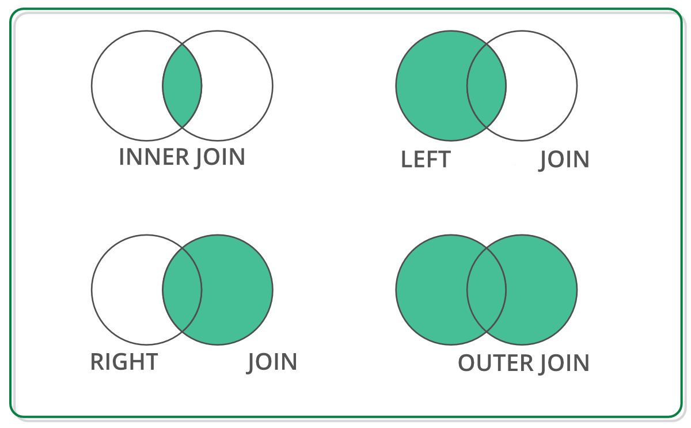

2. Pandas#
Series: es una matriz etiquetada unidimensional capaz de contener cualquier tipo de datos (enteros, cadenas, números de punto flotante, objetos de Python, etc.). Las etiquetas de los ejes (axis) se denominan colectivamente índice (index). El método básico para crear una serie es llamar a pd.Series([1,3,5,np.nan,6,8]).
DataFrame: Es una estructura de datos etiquetada bidimensional con columnas de tipos potencialmente diferentes. Se puede considerar como una hoja de cálculo o una tabla SQL, o un diccionario de objetos Series. Proviene del objeto data.frame() de R.
2.1. Las Series#
import pandas as pd
#pd.Series?
animales = ['Tigre', 'Oso', 'Alce']
pd.Series(animales)
0 Tigre
1 Oso
2 Alce
dtype: object
animales = ['Tigre', 'Oso', None]
pd.Series(animales)
0 Tigre
1 Oso
2 None
dtype: object
numbers = [1, 2, None]
pd.Series(numbers)
0 1.0
1 2.0
2 NaN
dtype: float64
import numpy as np
np.nan == None
False
np.nan == np.nan
False
np.isnan(np.nan)
True
sports = {'Futbol': 'Ecuador',
'Golf': 'Escocia',
'Sumo': 'Japon',
'Taekwondo': 'Corea del Sur'}
s = pd.Series(sports)
s
Futbol Ecuador
Golf Escocia
Sumo Japon
Taekwondo Corea del Sur
dtype: object
s.index
Index(['Futbol', 'Golf', 'Sumo', 'Taekwondo'], dtype='object')
s = pd.Series(['Tigre', 'Oso', 'Alce'], index=['India', 'America', 'Canada'])
s
India Tigre
America Oso
Canada Alce
dtype: object
sports = {'Futbol': 'Ecuador',
'Golf': 'Escocia',
'Sumo': 'Japon',
'Taekwondo': 'Corea del Sur'}
s = pd.Series(sports, index=['Golf', 'Sumo', 'Hockey'])
s
Golf Escocia
Sumo Japon
Hockey NaN
dtype: object
2.2. Haciendo consultas en Series#
sports = {'Futbol': 'Ecuador',
'Golf': 'Escocia',
'Sumo': 'Japon',
'Taekwondo': 'Corea del Sur'}
s = pd.Series(sports)
s
Futbol Ecuador
Golf Escocia
Sumo Japon
Taekwondo Corea del Sur
dtype: object
s.iloc[3]
'Corea del Sur'
s.loc['Golf']
'Escocia'
s[3]
'Corea del Sur'
s['Golf']
'Escocia'
sports = {99: 'Ecuador',
100: 'Escocia',
101: 'Japon',
102: 'Corea del Sur'}
s = pd.Series(sports)
# s[0] # no se hace la consulta
s = pd.Series([100.00, 120.00, 101.00, 3.00])
s
0 100.0
1 120.0
2 101.0
3 3.0
dtype: float64
total = 0
for item in s:
total+=item
print(total)
324.0
s = pd.Series([1, 2, 3])
s.loc['Animal'] = 'Bears' # agregamos un elemento a la serie
s
0 1
1 2
2 3
Animal Bears
dtype: object
2.3. Pandas: estructuras de datos para estadística#
Provee estructuras de datos adecuados para análisis estadístico, y añade funciones que facilitan el ingreso de datos, su organización y su manipulación.
2.3.1. Manipulación de datos#
Procedimientos comunes
Un DataFrame es una estructura de datos de dos dimensiones con etiquetas cuyas columnas pueden ser de diferentes tipos.
Empecemos creando un DataFrame con tres columnas Time, x y y
import numpy as np
import pandas as pd
t = np.arange(0,10,0.1)
x = np.sin(t)
y = np.cos(t)
df = pd.DataFrame({'Time':t, 'x':x,'y':y})
En pandas las filas se referencian por índices y las columnas por nombres. Si si desea la primera columna se tiene dos opciones:
df.Time
df['Time']
0 0.0
1 0.1
2 0.2
3 0.3
4 0.4
...
95 9.5
96 9.6
97 9.7
98 9.8
99 9.9
Name: Time, Length: 100, dtype: float64
Si se desea extraer más de una columna, se lo hace con una lista:
data = df[['Time','x']]
Para despleguar las primeras o últimas filas tenemos:
data.head()
data.tail()
| Time | x | |
|---|---|---|
| 95 | 9.5 | -0.075151 |
| 96 | 9.6 | -0.174327 |
| 97 | 9.7 | -0.271761 |
| 98 | 9.8 | -0.366479 |
| 99 | 9.9 | -0.457536 |
Para extraer las filas de la 5 a la 10 tenemos:
data[4:10]
| Time | x | |
|---|---|---|
| 4 | 0.4 | 0.389418 |
| 5 | 0.5 | 0.479426 |
| 6 | 0.6 | 0.564642 |
| 7 | 0.7 | 0.644218 |
| 8 | 0.8 | 0.717356 |
| 9 | 0.9 | 0.783327 |
El manejo de DataFrames es un tanto diferente de arrays en numpy. Por ejemplo, filas (enumeradas) y columnas (etiquetadas) se acceden de forma simultánea de la siguiente manera:
df[['Time','y']][4:10]
| Time | y | |
|---|---|---|
| 4 | 0.4 | 0.921061 |
| 5 | 0.5 | 0.877583 |
| 6 | 0.6 | 0.825336 |
| 7 | 0.7 | 0.764842 |
| 8 | 0.8 | 0.696707 |
| 9 | 0.9 | 0.621610 |
También se puede usar la manera estándar de fila/columna usando iloc:
df.iloc[4:10,[0,2]]
| Time | y | |
|---|---|---|
| 4 | 0.4 | 0.921061 |
| 5 | 0.5 | 0.877583 |
| 6 | 0.6 | 0.825336 |
| 7 | 0.7 | 0.764842 |
| 8 | 0.8 | 0.696707 |
| 9 | 0.9 | 0.621610 |
Finalmente, a veces se desea tener acceso directo a los datos, no al DataFrame, se usa:
# df.values
Lo que devuelve un numpy array
Notas en Selección de datos
Es cierto que DataFrames y arrays son parecidos, pero sus filosofías son diferentes. Es bueno tener muy claro sus diferencias para acceder a los datos:
numpy: maneja filas primero. Ej.,
data[0]es la primera fila del arraypandas: empieza con columnas. Ej.,
df['values'][0]es el primer elemento de la columna values.
Si un DataFrame tiene filas con etiquetas, puedes por ejemplo extraer la fila rowlabel con df.loc['rowlabel']. Si quieres acceder con el número de la fila, se hace con df.iloc[15]. También puedes usar iloc para acceder a datos en formato fila/columna df.ioc[2:4,3]
Extraer filas también funciona, por ejemplo df[0:5] para las primeras 5 filas. Lo que suele ser confuso es que para extraer una única fila se usa por ejmeplo df[5:6]. Si usas solo df[5] se devuelve un error.
2.3.2. Cargando nuestro primer conjunto de datos#
El conjunto de datos Gapminder viene originalmente de www.gapminder.org. La versión que exploraremos fue preparada por Jenifer Bryan de la Universidad de Columbia. Su repositorio puede encontrarse en https://github.com/jennybc/gapminder
Pandas tiene varias funciones de lectura de datos:
read_csvread_jsonread_excelread_spssread_stata...
import pandas as pd
uu = "https://raw.githubusercontent.com/vmoprojs/DataLectures/master/gapminder.csv"
df = pd.read_csv(uu)
Veamos algunos valores de la tabla:
country: país
continent: continente.
year: año.
lifeExp: esperanza de vida.
pop: población.
gdpPercap: producto interno bruto per cápita.
print(df)
country continent year lifeExp pop gdpPercap
0 Afghanistan Asia 1952 28.801 8425333 779.445314
1 Afghanistan Asia 1957 30.332 9240934 820.853030
2 Afghanistan Asia 1962 31.997 10267083 853.100710
3 Afghanistan Asia 1967 34.020 11537966 836.197138
4 Afghanistan Asia 1972 36.088 13079460 739.981106
... ... ... ... ... ... ...
1699 Zimbabwe Africa 1987 62.351 9216418 706.157306
1700 Zimbabwe Africa 1992 60.377 10704340 693.420786
1701 Zimbabwe Africa 1997 46.809 11404948 792.449960
1702 Zimbabwe Africa 2002 39.989 11926563 672.038623
1703 Zimbabwe Africa 2007 43.487 12311143 469.709298
[1704 rows x 6 columns]
print(type(df))
<class 'pandas.core.frame.DataFrame'>
Todo DataFrame tiene un atributo shape que nos devuelve el número de filas y columnas del DataFrame en forma de tupla.
print(df.shape)
(1704, 6)
Nota que no se usa paréntesis luego de shape. Esto se debe a que shape es un atributo del DataFrame, no un método donde si se requiere usar paréntesis. Te devolvería un error si agregaras un paréntesis.
Para ver el nombre de las columnas, usamos el atributo columns
print(df.columns)
Index(['country', 'continent', 'year', 'lifeExp', 'pop', 'gdpPercap'], dtype='object')
Cada columna (Serie) tiene que ser del mismo tipo, mientras que cada fila puede tener distintos tipos.
Veamos los tipos de datos de las columnas de nuestros datos usando el atrbuto dtypes:
print(df.dtypes)
country object
continent object
year int64
lifeExp float64
pop int64
gdpPercap float64
dtype: object
El tipo de dato object es el más flexible porque puede almacenar cualquier objeto de Python, incluidos cadenas de texto (strings), listas, diccionarios y objetos personalizados. El uso más común es para almacenar strings. Las operaciones con object podría ser más lento que con el tipo más específico, si se requiere hacer operaciones se recomienda cambiar el tipo de objecto al específico deseado (string ,int ,float,etc )
Para más detalle, usamos el método info.
print(df.info())
<class 'pandas.core.frame.DataFrame'>
RangeIndex: 1704 entries, 0 to 1703
Data columns (total 6 columns):
# Column Non-Null Count Dtype
--- ------ -------------- -----
0 country 1704 non-null object
1 continent 1704 non-null object
2 year 1704 non-null int64
3 lifeExp 1704 non-null float64
4 pop 1704 non-null int64
5 gdpPercap 1704 non-null float64
dtypes: float64(2), int64(2), object(2)
memory usage: 80.0+ KB
None
2.3.3. Columnas, filas y celdas#
Para inspeccionar los datos del DataFrame podemos apalancarnos en métodos. Por ejemplo, head nos permite ver las primeras 5 filas de los datos
print(df.head())
country continent year lifeExp pop gdpPercap
0 Afghanistan Asia 1952 28.801 8425333 779.445314
1 Afghanistan Asia 1957 30.332 9240934 820.853030
2 Afghanistan Asia 1962 31.997 10267083 853.100710
3 Afghanistan Asia 1967 34.020 11537966 836.197138
4 Afghanistan Asia 1972 36.088 13079460 739.981106
2.3.4. Seleccionar e indexar columnas por nombre#
Para acceder a columnas específicas de nuestros datos, podemos usar corchetes [].
country_df = df['country']
country_df.head()
0 Afghanistan
1 Afghanistan
2 Afghanistan
3 Afghanistan
4 Afghanistan
Name: country, dtype: object
country_df.tail()# muestra las últimas filas del df
1699 Zimbabwe
1700 Zimbabwe
1701 Zimbabwe
1702 Zimbabwe
1703 Zimbabwe
Name: country, dtype: object
Para acceder a varias columnas, dentro del primer corchete, le pasamos una lista de nombres
subset = df[['country', 'continent','year']]
print(subset)
country continent year
0 Afghanistan Asia 1952
1 Afghanistan Asia 1957
2 Afghanistan Asia 1962
3 Afghanistan Asia 1967
4 Afghanistan Asia 1972
... ... ... ...
1699 Zimbabwe Africa 1987
1700 Zimbabwe Africa 1992
1701 Zimbabwe Africa 1997
1702 Zimbabwe Africa 2002
1703 Zimbabwe Africa 2007
[1704 rows x 3 columns]
Usando la notación con corchetes [], no se puede pasar un número que indique la posición. Para ello usamos .iloc[]
df.iloc[5:10,[3,2]]
| lifeExp | year | |
|---|---|---|
| 5 | 38.438 | 1977 |
| 6 | 39.854 | 1982 |
| 7 | 40.822 | 1987 |
| 8 | 41.674 | 1992 |
| 9 | 41.763 | 1997 |
Indica la diferencia en los tipos de objectos que se obtienen si se tiene:
df['country']df[['country']]
2.3.5. Usando notación “.” para acceder a valores de columna#
Para acceder a valores del DataFrame también puedes usar la notación “.”
df.country
0 Afghanistan
1 Afghanistan
2 Afghanistan
3 Afghanistan
4 Afghanistan
...
1699 Zimbabwe
1700 Zimbabwe
1701 Zimbabwe
1702 Zimbabwe
1703 Zimbabwe
Name: country, Length: 1704, dtype: object
Advertencias: Ten cuidado con el nombre de las columnas cuando vas a usar la notación punto.
Si el nombre de la columna coincide con el nombre de un atributo (
shapepor ejemplo), entonces el atributo tiene jerarquía y te devolverá el atributo y no la columna.Si el nombre de la columna tiene espacios o caracteres especiales, no puedes usar la notación punto y solo puedes usar el acceso con corchetes.
2.3.6. Subconjunto de filas#
Atributo |
Descripción |
|---|---|
|
Subconjunto basado en la etiqueta del índice |
|
Subconjunto basado en el número de la fila |
Accedamos a los datos con la etiqueta del índice en nuestros datos
print(df.loc[0]) # nota que '0' no representa un número en este caso, sino la etiqueta de la fila
country Afghanistan
continent Asia
year 1952
lifeExp 28.801
pop 8425333
gdpPercap 779.445314
Name: 0, dtype: object
Indica la diferencia entre
subset_loc = df.loc[0]subset_head = df.head(n=1)
Podemos acceder a varias filas usando las etiquetas de fila:
print(df.loc[[0,30,451]])
country continent year lifeExp pop gdpPercap
0 Afghanistan Asia 1952 28.801 8425333 779.445314
30 Algeria Africa 1982 61.368 20033753 5745.160213
451 Ecuador Americas 1987 67.231 9545158 6481.776993
2.3.7. Usando .iloc#
.iloc hace lo mismo que .loc pero usando números que representan las posiciones de la fila. Solo recuerda a las etiquetas de fila pueden o no ser números.
print(df.iloc[1])# accedo a la segunda fila porque inicia en 0.
country Afghanistan
continent Asia
year 1957
lifeExp 30.332
pop 9240934
gdpPercap 820.85303
Name: 1, dtype: object
Con ‘.iloc’ podemos usar el índice -1 para acceder a la última fila (esto no es posible con .loc)
print(df.iloc[-1])
country Zimbabwe
continent Africa
year 2007
lifeExp 43.487
pop 12311143
gdpPercap 469.709298
Name: 1703, dtype: object
print(df.iloc[[0,30,451]])
country continent year lifeExp pop gdpPercap
0 Afghanistan Asia 1952 28.801 8425333 779.445314
30 Algeria Africa 1982 61.368 20033753 5745.160213
451 Ecuador Americas 1987 67.231 9545158 6481.776993
2.3.8. Agrupaciones#
pandas ofrece funciones poderosas para manejar datos perdidos que suelen ser reemplazados por nan (not a number). También permite realizar manipilaciones más sofisticadas como pivotaje. Por ejemplo, se puede usar DataFrames para hacer grupos y su análisis estadístico de cada grupo.
import pandas as pd
import numpy as np
data = pd.DataFrame({
'Gender' : ['f', 'f', 'm', 'f', 'm','m', 'f', 'm', 'f', 'm', 'm'],
'TV': [3.4, 3.5, 2.6, 4.7, 4.1, 4.1, 5.1, 3.9, 3.7, 2.1, 4.3]
})
data
| Gender | TV | |
|---|---|---|
| 0 | f | 3.4 |
| 1 | f | 3.5 |
| 2 | m | 2.6 |
| 3 | f | 4.7 |
| 4 | m | 4.1 |
| 5 | m | 4.1 |
| 6 | f | 5.1 |
| 7 | m | 3.9 |
| 8 | f | 3.7 |
| 9 | m | 2.1 |
| 10 | m | 4.3 |
#Agrupamos los datos
grouped = data.groupby('Gender')
grouped.apply(print)
Gender TV
0 f 3.4
1 f 3.5
3 f 4.7
6 f 5.1
8 f 3.7
Gender TV
2 m 2.6
4 m 4.1
5 m 4.1
7 m 3.9
9 m 2.1
10 m 4.3
Nota que si imprimes grouped solo se imprime espacio de memoria. A partir de la agrupación podemos acceder a las columnas que devuleven objetos tipo Series.
# Algunas estadísticas generales
grouped.describe()
| TV | ||||||||
|---|---|---|---|---|---|---|---|---|
| count | mean | std | min | 25% | 50% | 75% | max | |
| Gender | ||||||||
| f | 5.0 | 4.080000 | 0.769415 | 3.4 | 3.500 | 3.7 | 4.7 | 5.1 |
| m | 6.0 | 3.516667 | 0.926103 | 2.1 | 2.925 | 4.0 | 4.1 | 4.3 |
# Graficamos los datos
grouped.plot()
Gender
f Axes(0.125,0.11;0.775x0.77)
m Axes(0.125,0.11;0.775x0.77)
dtype: object
# Separamos los grupos como DataFrames
df_female = grouped.get_group('f')
df_female
| Gender | TV | |
|---|---|---|
| 0 | f | 3.4 |
| 1 | f | 3.5 |
| 3 | f | 4.7 |
| 6 | f | 5.1 |
| 8 | f | 3.7 |
# Obtenemos los datos como un numpy-array
values_female = df_female.values
values_female
array([['f', 3.4],
['f', 3.5],
['f', 4.7],
['f', 5.1],
['f', 3.7]], dtype=object)
Volviendo a nuestro ejemplo con los datos de gapminder.
Ejercicio: Agrupar por año y obtener la media de la variable esperanza de vida (lifeExp)
print(df.groupby("year")["lifeExp"].mean())
year
1952 49.057620
1957 51.507401
1962 53.609249
1967 55.678290
1972 57.647386
1977 59.570157
1982 61.533197
1987 63.212613
1992 64.160338
1997 65.014676
2002 65.694923
2007 67.007423
Name: lifeExp, dtype: float64
Ejercicio: Agrupar por año-continente y obtener la media de la variable esperanza de vida (lifeExp) y el PIB per cápita (gdpPercap).
multigrupo = df.groupby(['year','continent'])[['lifeExp','gdpPercap']].mean()
multigrupo.head()
| lifeExp | gdpPercap | ||
|---|---|---|---|
| year | continent | ||
| 1952 | Africa | 39.135500 | 1252.572466 |
| Americas | 53.279840 | 4079.062552 | |
| Asia | 46.314394 | 5195.484004 | |
| Europe | 64.408500 | 5661.057435 | |
| Oceania | 69.255000 | 10298.085650 |
En ocasiones el código puede legar a ser largo, por lo que el uso de paréntesis nos sirve para escribirlo en varias líneas:
multigrupo = (df.
groupby(['year','continent'])
[['lifeExp','gdpPercap']].
mean())
print(multigrupo.head())
lifeExp gdpPercap
year continent
1952 Africa 39.135500 1252.572466
Americas 53.279840 4079.062552
Asia 46.314394 5195.484004
Europe 64.408500 5661.057435
Oceania 69.255000 10298.085650
Nota que year aparece una vez en la impresión. Si requieres tener un formato tabular (que se repita en cada fila, llamado flatten) puedes usar reset_index:
print(multigrupo.reset_index().head())
year continent lifeExp gdpPercap
0 1952 Africa 39.135500 1252.572466
1 1952 Americas 53.279840 4079.062552
2 1952 Asia 46.314394 5195.484004
3 1952 Europe 64.408500 5661.057435
4 1952 Oceania 69.255000 10298.085650
Para contar el número de casos usamos .value_counts() y para el número de valores únicos usamos .nunique()
df.groupby('continent')['country'].value_counts()
continent country
Africa Algeria 12
Angola 12
Libya 12
Ghana 12
Guinea 12
..
Europe Germany 12
Greece 12
Hungary 12
Oceania Australia 12
New Zealand 12
Name: count, Length: 142, dtype: int64
df.groupby('continent')['country'].nunique()
continent
Africa 52
Americas 25
Asia 33
Europe 30
Oceania 2
Name: country, dtype: int64
2.3.9. Wide & Long#
Los datos gapminder que hemos analizado, están en un formato que se conoce como long o largo. Este tipo de formatos nos permite pivotearpara obtener métricas de resumen de datos y agrupaciones (parecido a datos listos para usarse en una tabla dinámica de Excel). El resultado de las agrupaciones son datos en formato wide.
2.3.9.1. .pivot_table#
Documentación pandas: https://pandas.pydata.org/docs/reference/api/pandas.pivot_table.html
Devuelve un DataFrame reformado (reshaped) organizado por valores de índice/columna dados.
Ejercicio: Obtener la esperanza de vida lifeExp por cara año y país donde los continentes estén como columnas:
df_wide = df.pivot_table(
index = ['year','country'],
columns = 'continent',
values = 'lifeExp'
).reset_index()
print(df_wide)
continent year country Africa Americas Asia Europe Oceania
0 1952 Afghanistan NaN NaN 28.801 NaN NaN
1 1952 Albania NaN NaN NaN 55.23 NaN
2 1952 Algeria 43.077 NaN NaN NaN NaN
3 1952 Angola 30.015 NaN NaN NaN NaN
4 1952 Argentina NaN 62.485 NaN NaN NaN
... ... ... ... ... ... ... ...
1699 2007 Vietnam NaN NaN 74.249 NaN NaN
1700 2007 West Bank and Gaza NaN NaN 73.422 NaN NaN
1701 2007 Yemen, Rep. NaN NaN 62.698 NaN NaN
1702 2007 Zambia 42.384 NaN NaN NaN NaN
1703 2007 Zimbabwe 43.487 NaN NaN NaN NaN
[1704 rows x 7 columns]
2.3.9.2. .melt#
Documentación pandas: https://pandas.pydata.org/docs/reference/api/pandas.melt.html
Por otro lado, para volver de datos agrupados wide a un formato long tenemos:
df_long = df_wide.melt(id_vars = ['year','country'])
df_long.head()
| year | country | continent | value | |
|---|---|---|---|---|
| 0 | 1952 | Afghanistan | Africa | NaN |
| 1 | 1952 | Albania | Africa | NaN |
| 2 | 1952 | Algeria | Africa | 43.077 |
| 3 | 1952 | Angola | Africa | 30.015 |
| 4 | 1952 | Argentina | Africa | NaN |
Nota que df_long tiene valores perdidos y más registros (shape) que df porque hay valores NaN.
Documentación pandas: https://pandas.pydata.org/docs/reference/api/pandas.DataFrame.dropna.html
Podemos borrarlos de la siguiente manera:
df_long.dropna(inplace = True)
df_long.head()
| year | country | continent | value | |
|---|---|---|---|---|
| 2 | 1952 | Algeria | Africa | 43.077 |
| 3 | 1952 | Angola | Africa | 30.015 |
| 10 | 1952 | Benin | Africa | 38.223 |
| 13 | 1952 | Botswana | Africa | 47.622 |
| 16 | 1952 | Burkina Faso | Africa | 31.975 |
Ejercicio: obtener la mediana de la esperanza de vida y del PIB per cápita por continente y país (consejo: usa
.pivot_table)
2.3.10. Merge#
Documentación pandas: https://pandas.pydata.org/docs/reference/api/pandas.DataFrame.merge.html
Para unir tablas se usa merge. Primero manejemos algunos atributos importantes de DataFrames:
import pandas as pd
df = pd.DataFrame([{'Nombre': 'Melani', 'Producto comprado': 'Esponja', 'Costo': 22.50},
{'Nombre': 'Carlos', 'Producto comprado': 'Arena para gatos', 'Costo': 2.50},
{'Nombre': 'Erica', 'Producto comprado': 'Cuchara', 'Costo': 5.00}],
index=['Tienda 1', 'Tienda 1', 'Tienda 2'])
df
| Nombre | Producto comprado | Costo | |
|---|---|---|---|
| Tienda 1 | Melani | Esponja | 22.5 |
| Tienda 1 | Carlos | Arena para gatos | 2.5 |
| Tienda 2 | Erica | Cuchara | 5.0 |
Podemos agregar una columna al DataFrame creado usando df['variable']=[]
df['Fecha'] = ['Diciembre 1', 'Enero 1', 'mediado Mayo']
df
| Nombre | Producto comprado | Costo | Fecha | |
|---|---|---|---|---|
| Tienda 1 | Melani | Esponja | 22.5 | Diciembre 1 |
| Tienda 1 | Carlos | Arena para gatos | 2.5 | Enero 1 |
| Tienda 2 | Erica | Cuchara | 5.0 | mediado Mayo |
Si asignamos un único valor, por ejemplo df['variable']=10, se asigna el mismo valor a toda la columna:
df['Entregado'] = True
df
| Nombre | Producto comprado | Costo | Fecha | Entregado | |
|---|---|---|---|---|---|
| Tienda 1 | Melani | Esponja | 22.5 | Diciembre 1 | True |
| Tienda 1 | Carlos | Arena para gatos | 2.5 | Enero 1 | True |
| Tienda 2 | Erica | Cuchara | 5.0 | mediado Mayo | True |
Los valores perdidos se codifican como None:
df['CalificacionAtencion'] = ['Positive', None, 'Negative']
df
| Nombre | Producto comprado | Costo | Fecha | Entregado | CalificacionAtencion | |
|---|---|---|---|---|---|---|
| Tienda 1 | Melani | Esponja | 22.5 | Diciembre 1 | True | Positive |
| Tienda 1 | Carlos | Arena para gatos | 2.5 | Enero 1 | True | None |
| Tienda 2 | Erica | Cuchara | 5.0 | mediado Mayo | True | Negative |
Usamos reset_index() para que las Tiendas ahora sean parte de las columnas y luego modificamos la columna fecha dejando un valor perdido en el índice 1.
adf = df.reset_index()
adf['Fecha'] = pd.Series({0: 'Diciembre 1', 2: 'mediado Mayo'})
adf
| index | Nombre | Producto comprado | Costo | Fecha | Entregado | CalificacionAtencion | |
|---|---|---|---|---|---|---|---|
| 0 | Tienda 1 | Melani | Esponja | 22.5 | Diciembre 1 | True | Positive |
| 1 | Tienda 1 | Carlos | Arena para gatos | 2.5 | NaN | True | None |
| 2 | Tienda 2 | Erica | Cuchara | 5.0 | mediado Mayo | True | Negative |
Para ilustrar el uso de merge debemos crear dos DataFrame:
staff_df = pd.DataFrame([{'Nombre': 'Carolina', 'Role': 'Directora de RRHH'},
{'Nombre': 'Salomé', 'Role': 'Vinculación'},
{'Nombre': 'Jacinto', 'Role': 'Evaluador'}])
staff_df = staff_df.set_index('Nombre')
student_df = pd.DataFrame([{'Nombre': 'Jacinto', 'Carrera': 'Negocios'},
{'Nombre': 'Mauro', 'Carrera': 'Leyes'},
{'Nombre': 'Salomé', 'Carrera': 'Ingenieria'}])
student_df = student_df.set_index('Nombre')
print(staff_df.head())
print()
print(student_df.head())
Role
Nombre
Carolina Directora de RRHH
Salomé Vinculación
Jacinto Evaluador
Carrera
Nombre
Jacinto Negocios
Mauro Leyes
Salomé Ingenieria
Tipos de join
{kind=link}
pd.merge(staff_df, student_df, how='outer', left_index=True, right_index=True)
| Role | Carrera | |
|---|---|---|
| Nombre | ||
| Carolina | Directora de RRHH | NaN |
| Jacinto | Evaluador | Negocios |
| Mauro | NaN | Leyes |
| Salomé | Vinculación | Ingenieria |
pd.merge(staff_df, student_df, how='inner', left_index=True, right_index=True)
| Role | Carrera | |
|---|---|---|
| Nombre | ||
| Salomé | Vinculación | Ingenieria |
| Jacinto | Evaluador | Negocios |
pd.merge(staff_df, student_df, how='left', left_index=True, right_index=True)
| Role | Carrera | |
|---|---|---|
| Nombre | ||
| Carolina | Directora de RRHH | NaN |
| Salomé | Vinculación | Ingenieria |
| Jacinto | Evaluador | Negocios |
pd.merge(staff_df, student_df, how='right', left_index=True, right_index=True)
| Role | Carrera | |
|---|---|---|
| Nombre | ||
| Jacinto | Evaluador | Negocios |
| Mauro | NaN | Leyes |
| Salomé | Vinculación | Ingenieria |
staff_df = staff_df.reset_index()
student_df = student_df.reset_index()
pd.merge(staff_df, student_df, how='left', left_on='Nombre', right_on='Nombre')
| Nombre | Role | Carrera | |
|---|---|---|---|
| 0 | Carolina | Directora de RRHH | NaN |
| 1 | Salomé | Vinculación | Ingenieria |
| 2 | Jacinto | Evaluador | Negocios |
2.3.11. Datos categóricos#
df = pd.DataFrame(['A+', 'A', 'A-', 'B+', 'B', 'B-', 'C+', 'C', 'C-', 'D+', 'D'],
index=['excelente', 'excelente', 'excelente', 'bueno', 'bueno', 'bueno', 'ok', 'ok', 'ok', 'bajo', 'bajo'])
df.head()
| 0 | |
|---|---|
| excelente | A+ |
| excelente | A |
| excelente | A- |
| bueno | B+ |
| bueno | B |
df.rename(columns={0: 'Notas'}, inplace=True) #cambia el nombre de "0" a "Notas"
df
| Notas | |
|---|---|
| excelente | A+ |
| excelente | A |
| excelente | A- |
| bueno | B+ |
| bueno | B |
| bueno | B- |
| ok | C+ |
| ok | C |
| ok | C- |
| bajo | D+ |
| bajo | D |
df['Notas'].astype('category').head()
excelente A+
excelente A
excelente A-
bueno B+
bueno B
Name: Notas, dtype: category
Categories (11, object): ['A', 'A+', 'A-', 'B', ..., 'C+', 'C-', 'D', 'D+']
notas = pd.Categorical(df.Notas, categories=['D', 'D+', 'C-', 'C', 'C+', 'B-', 'B', 'B+', 'A-', 'A', 'A+'],
ordered=True)
notas
['A+', 'A', 'A-', 'B+', 'B', ..., 'C+', 'C', 'C-', 'D+', 'D']
Length: 11
Categories (11, object): ['D' < 'D+' < 'C-' < 'C' ... 'B+' < 'A-' < 'A' < 'A+']
notas > 'C'
array([ True, True, True, True, True, True, True, False, False,
False, False])
uu = "https://raw.githubusercontent.com/vmoprojs/DataLectures/master/SpatialData/VABNoPetroleroCantones2007-2019.csv"
df = pd.read_csv(uu)
df.head()
| NOM_PROV | COD_PROV | NOM_CANT | COD_CANT | PRODUCCION | CONSUMO_INTERMEDIO | VAB | YEAR | TIPO | |
|---|---|---|---|---|---|---|---|---|---|
| 0 | AZUAY | 1 | Cuenca | 101 | 3.934100e+06 | 1.829345e+06 | 2.104755e+06 | 2007 | Definitivo |
| 1 | AZUAY | 1 | Girón | 102 | 4.362436e+04 | 1.811613e+04 | 2.550823e+04 | 2007 | Definitivo |
| 2 | AZUAY | 1 | Gualaceo | 103 | 1.451126e+05 | 5.875048e+04 | 8.636215e+04 | 2007 | Definitivo |
| 3 | AZUAY | 1 | Nabón | 104 | 5.595320e+04 | 2.387684e+04 | 3.207636e+04 | 2007 | Definitivo |
| 4 | AZUAY | 1 | Paute | 105 | 1.191381e+05 | 5.077103e+04 | 6.836707e+04 | 2007 | Definitivo |
df = df[df['YEAR']==2019]
df = df.set_index('NOM_CANT').groupby(level=0)['VAB'].agg([np.average]).rename(columns={'average': 'avg'})
df.head()
df.describe()
| avg | |
|---|---|
| count | 2.190000e+02 |
| mean | 4.304939e+05 |
| std | 2.286327e+06 |
| min | 4.037812e+03 |
| 25% | 2.730949e+04 |
| 50% | 6.001888e+04 |
| 75% | 1.902939e+05 |
| max | 2.503261e+07 |
Para agrupar valores en intervalos discretos usamos pd.cut:
pd.cut(df['avg'],10)
NOM_CANT
24 De Mayo (-20990.756, 2506894.639]
Aguarico (-20990.756, 2506894.639]
Alausí (-20990.756, 2506894.639]
Alfredo Baquerizo Moreno (-20990.756, 2506894.639]
Ambato (-20990.756, 2506894.639]
...
Yaguachi (-20990.756, 2506894.639]
Yanzatza (-20990.756, 2506894.639]
Zamora (-20990.756, 2506894.639]
Zapotillo (-20990.756, 2506894.639]
Zaruma (-20990.756, 2506894.639]
Name: avg, Length: 219, dtype: category
Categories (10, interval[float64, right]): [(-20990.756, 2506894.639] < (2506894.639, 5009751.466] < (5009751.466, 7512608.293] < (7512608.293, 10015465.12] ... (15021178.774, 17524035.601] < (17524035.601, 20026892.428] < (20026892.428, 22529749.255] < (22529749.255, 25032606.081]]
2.3.12. Tablas dinámicas#
uu = "https://raw.githubusercontent.com/vmoprojs/DataLectures/master/cars.csv"
df = pd.read_csv(uu)
df.head()
| YEAR | Make | Model | Size | (kW) | Unnamed: 5 | TYPE | CITY (kWh/100 km) | HWY (kWh/100 km) | COMB (kWh/100 km) | CITY (Le/100 km) | HWY (Le/100 km) | COMB (Le/100 km) | (g/km) | RATING | (km) | TIME (h) | |
|---|---|---|---|---|---|---|---|---|---|---|---|---|---|---|---|---|---|
| 0 | 2012 | MITSUBISHI | i-MiEV | SUBCOMPACT | 49 | A1 | B | 16.9 | 21.4 | 18.7 | 1.9 | 2.4 | 2.1 | 0 | NaN | 100 | 7 |
| 1 | 2012 | NISSAN | LEAF | MID-SIZE | 80 | A1 | B | 19.3 | 23.0 | 21.1 | 2.2 | 2.6 | 2.4 | 0 | NaN | 117 | 7 |
| 2 | 2013 | FORD | FOCUS ELECTRIC | COMPACT | 107 | A1 | B | 19.0 | 21.1 | 20.0 | 2.1 | 2.4 | 2.2 | 0 | NaN | 122 | 4 |
| 3 | 2013 | MITSUBISHI | i-MiEV | SUBCOMPACT | 49 | A1 | B | 16.9 | 21.4 | 18.7 | 1.9 | 2.4 | 2.1 | 0 | NaN | 100 | 7 |
| 4 | 2013 | NISSAN | LEAF | MID-SIZE | 80 | A1 | B | 19.3 | 23.0 | 21.1 | 2.2 | 2.6 | 2.4 | 0 | NaN | 117 | 7 |
df.pivot_table(values='(kW)', index='YEAR', columns='Make', aggfunc=np.mean)
| Make | BMW | CHEVROLET | FORD | KIA | MITSUBISHI | NISSAN | SMART | TESLA |
|---|---|---|---|---|---|---|---|---|
| YEAR | ||||||||
| 2012 | NaN | NaN | NaN | NaN | 49.0 | 80.0 | NaN | NaN |
| 2013 | NaN | NaN | 107.0 | NaN | 49.0 | 80.0 | 35.0 | 280.000000 |
| 2014 | NaN | 104.0 | 107.0 | NaN | 49.0 | 80.0 | 35.0 | 268.333333 |
| 2015 | 125.0 | 104.0 | 107.0 | 81.0 | 49.0 | 80.0 | 35.0 | 320.666667 |
| 2016 | 125.0 | 104.0 | 107.0 | 81.0 | 49.0 | 80.0 | 35.0 | 409.700000 |
df.pivot_table(values='(kW)', index='YEAR', columns='Make', aggfunc=[np.mean,np.min], margins=True)
| mean | amin | |||||||||||||||||
|---|---|---|---|---|---|---|---|---|---|---|---|---|---|---|---|---|---|---|
| Make | BMW | CHEVROLET | FORD | KIA | MITSUBISHI | NISSAN | SMART | TESLA | All | BMW | CHEVROLET | FORD | KIA | MITSUBISHI | NISSAN | SMART | TESLA | All |
| YEAR | ||||||||||||||||||
| 2012 | NaN | NaN | NaN | NaN | 49.0 | 80.0 | NaN | NaN | 64.500000 | NaN | NaN | NaN | NaN | 49.0 | 80.0 | NaN | NaN | 49 |
| 2013 | NaN | NaN | 107.0 | NaN | 49.0 | 80.0 | 35.0 | 280.000000 | 158.444444 | NaN | NaN | 107.0 | NaN | 49.0 | 80.0 | 35.0 | 270.0 | 35 |
| 2014 | NaN | 104.0 | 107.0 | NaN | 49.0 | 80.0 | 35.0 | 268.333333 | 135.000000 | NaN | 104.0 | 107.0 | NaN | 49.0 | 80.0 | 35.0 | 225.0 | 35 |
| 2015 | 125.0 | 104.0 | 107.0 | 81.0 | 49.0 | 80.0 | 35.0 | 320.666667 | 181.428571 | 125.0 | 104.0 | 107.0 | 81.0 | 49.0 | 80.0 | 35.0 | 280.0 | 35 |
| 2016 | 125.0 | 104.0 | 107.0 | 81.0 | 49.0 | 80.0 | 35.0 | 409.700000 | 252.263158 | 125.0 | 104.0 | 107.0 | 81.0 | 49.0 | 80.0 | 35.0 | 283.0 | 35 |
| All | 125.0 | 104.0 | 107.0 | 81.0 | 49.0 | 80.0 | 35.0 | 345.478261 | 190.622642 | 125.0 | 104.0 | 107.0 | 81.0 | 49.0 | 80.0 | 35.0 | 225.0 | 35 |
2.3.13. Apply#
Documentación pandas: https://pandas.pydata.org/docs/reference/api/pandas.DataFrame.apply.html
Cuando trabajas con DataFrames es posible que requieras aplicar funciones en filas o columnas.
df = pd.DataFrame({"a": [2,4,6],"b": [2,3,5]})
print(df)
a b
0 2 2
1 4 3
2 6 5
Creamos una función simple llamada cuad que eleva los valores ingresados al cuadrado:
def cuad(x):
sol = x**2
return(sol)
Aplicamos la función creada en la columna a del DataFrame
df['a'].apply(cuad)
0 4
1 16
2 36
Name: a, dtype: int64
Ahora creamos una función que tenga dos parámetros:
def cuad_e(x,e):
sol = x**e
return(sol)
df['a'].apply(cuad_e,e = 3)
0 8
1 64
2 216
Name: a, dtype: int64
Nota que al aplicar las funciones anteriores estábamos trabajando sobre objetos tipo Series.
Si queremos aplicar una función sobre varias columnas del DataFrame, usamos el parámetro axis=0 para aplicar la función por cada columna:
df.apply(cuad,axis = 0)
| a | b | |
|---|---|---|
| 0 | 4 | 4 |
| 1 | 16 | 9 |
| 2 | 36 | 25 |
De manera similar, si queremos aplicar una función sobre varias filas del DataFrame, usamos el parámetro axis=1 para aplicar la función por cada fila:
df.apply(cuad_e,axis = 0,e = 2)
| a | b | |
|---|---|---|
| 0 | 4 | 4 |
| 1 | 16 | 9 |
| 2 | 36 | 25 |
df['a'].apply(lambda x: x**2)
0 4
1 16
2 36
Name: a, dtype: int64
A veces la función que deseamos aplicar no es tan compleja tal que no requiere que la creemos por separado. En este caso podemos usar lambda.
df['a'].apply(lambda x: np.sqrt(x)-3)
0 -1.585786
1 -1.000000
2 -0.550510
Name: a, dtype: float64
2.3.13.1. .concat#
Documentación pandas: https://pandas.pydata.org/docs/reference/api/pandas.concat.html
La concatenación nos permite concatenar filas o columnas de diferentes conjuntos de datos.
df1 = pd.DataFrame({'A': ['a0','a1','a2','a3'],
'B': ['b0','b1','b2','b3'],
'C': ['c0','c1','c2','c3'],
'D': ['d0','d1','d2','d3']})
print(df1)
df2 = pd.DataFrame({'A': ['a4','a5','a7','a7'],
'B': ['b4','b5','b6','b7'],
'C': ['c4','c5','c6','c7'],
'D': ['d4','d5','d6','d7']})
print(df2)
df3 = pd.DataFrame({'A': ['a8','a9','a10','a11'],
'B': ['b8','b9','b10','b11'],
'C': ['c8','c9','c10','c11'],
'D': ['d8','d9','d10','d11']})
print(df3)
A B C D
0 a0 b0 c0 d0
1 a1 b1 c1 d1
2 a2 b2 c2 d2
3 a3 b3 c3 d3
A B C D
0 a4 b4 c4 d4
1 a5 b5 c5 d5
2 a7 b6 c6 d6
3 a7 b7 c7 d7
A B C D
0 a8 b8 c8 d8
1 a9 b9 c9 d9
2 a10 b10 c10 d10
3 a11 b11 c11 d11
El index del DataFrame es un axis del DataFrame. Pandas tratará de alinear los datos por axis. El otro axis del DataFrame es columns.
df1.columns
Index(['A', 'B', 'C', 'D'], dtype='object')
df1.index
RangeIndex(start=0, stop=4, step=1)
df1.values# representa el cuerpo del dataframe como array
array([['a0', 'b0', 'c0', 'd0'],
['a1', 'b1', 'c1', 'd1'],
['a2', 'b2', 'c2', 'd2'],
['a3', 'b3', 'c3', 'd3']], dtype=object)
Para concatenar por filas:
row_concat = pd.concat([df1,df2,df3])
print(row_concat)
A B C D
0 a0 b0 c0 d0
1 a1 b1 c1 d1
2 a2 b2 c2 d2
3 a3 b3 c3 d3
0 a4 b4 c4 d4
1 a5 b5 c5 d5
2 a7 b6 c6 d6
3 a7 b7 c7 d7
0 a8 b8 c8 d8
1 a9 b9 c9 d9
2 a10 b10 c10 d10
3 a11 b11 c11 d11
Nota que el índice del DataFrame concatenado se repite.
Usa
.loc[]para indexar valores del DataFrame
Ahora creamos una nueva fila de datos que deseamos agregar al DataFrame:
new_row_series = pd.Series(['a12','b12','c12','d12'])
print(pd.concat([df1,new_row_series]))
A B C D 0
0 a0 b0 c0 d0 NaN
1 a1 b1 c1 d1 NaN
2 a2 b2 c2 d2 NaN
3 a3 b3 c3 d3 NaN
0 NaN NaN NaN NaN a12
1 NaN NaN NaN NaN b12
2 NaN NaN NaN NaN c12
3 NaN NaN NaN NaN d12
Nota que no se obtuvo el resultado deseado y se obtuvo una columna extra.
Para arreglar este problema, convertimos esta serie tipo fila en un DataFrame:
new_row_df = pd.DataFrame(
# nota el doble corchete para crear datos tipo fila
data = [['a12','b12','c12','d12']],
columns = ["A","B","C","D"]
)
new_row_df
| A | B | C | D | |
|---|---|---|---|---|
| 0 | a12 | b12 | c12 | d12 |
pd.concat([df1,new_row_df])
| A | B | C | D | |
|---|---|---|---|---|
| 0 | a0 | b0 | c0 | d0 |
| 1 | a1 | b1 | c1 | d1 |
| 2 | a2 | b2 | c2 | d2 |
| 3 | a3 | b3 | c3 | d3 |
| 0 | a12 | b12 | c12 | d12 |
Para concatenar por columnas, usamos axis = 'columns'
col_concat = pd.concat([df1,df2,df3],axis = 'columns')
print(col_concat)
A B C D A B C D A B C D
0 a0 b0 c0 d0 a4 b4 c4 d4 a8 b8 c8 d8
1 a1 b1 c1 d1 a5 b5 c5 d5 a9 b9 c9 d9
2 a2 b2 c2 d2 a7 b6 c6 d6 a10 b10 c10 d10
3 a3 b3 c3 d3 a7 b7 c7 d7 a11 b11 c11 d11
print(col_concat['A'])
A A A
0 a0 a4 a8
1 a1 a5 a9
2 a2 a7 a10
3 a3 a7 a11